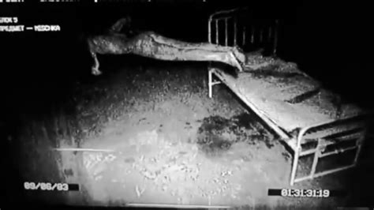

Although this has been debunked, it's still one of the creepiest ghost stories to ever come out of Russia. It's known as The Russian Sleep Experiment. According to the story, researchers in the 1940s took five prison inmates and locked them in an airtight chamber with a special gas to keep them awake. They wanted to see the effects of prolonged sleep deprivation and promised the subjects their freedom if they could go 30 days without sleep. The results were disastrous and horrific. On the fifth day, paranoia started to set in and they stopped talking to one another. On the ninth day, a few of them started screaming relentlessly while the others tore apart the books they were given, smeared them with excrement, and blocked off the one-way mirrors so they couldn't be watched anymore. Then, the screaming stopped and three days went by without a sound from inside the chamber. The researchers addressed them via the intercom and said they were coming in and to lie flat on the floor. Then one of the voices answered, "We no longer want to be freed."
After 15 days, the researchers finally opened up the chamber and the sight inside was horrific. One of the subjects was dead and torn to shreds, with chunks of him stuffed into the floor drains. The other four subjects had mutilated themselves and were terrified at the thought of actually going to sleep and begged to stay in the chamber. They were forcibly removed, and when surgeons tried to repair the damage, they resisted so strongly that they couldn't be sedated. They laughed maniacally as they were sewn back together, fully awake and aware of what was going on. Eventually, after demanding to return to the chamber, the head researcher told his team to let them back in. But one member of the team resisted, shot the head researcher, and then shot one of the two remaining subjects. Before killing the last one, he asked a single question: "What are you?"
The subject responded , "Have you forgotten so easily? We are you. We are the madness that lurks within you all, begging to be free at every moment in your deepest animal mind. We are what you hide from in your beds every night. We are what you sedate into silence and paralysis when you go to the nocturnal haven where we cannot tread." The researcher, having gotten his answer, shot the last remaining subject in the heart.